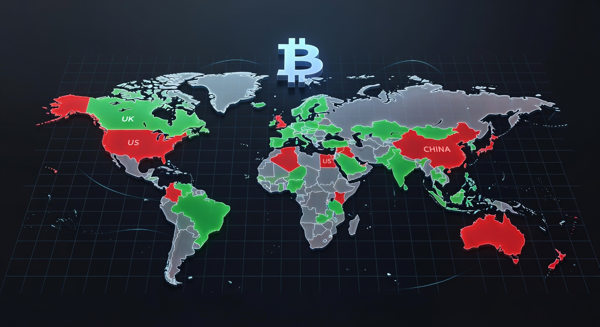
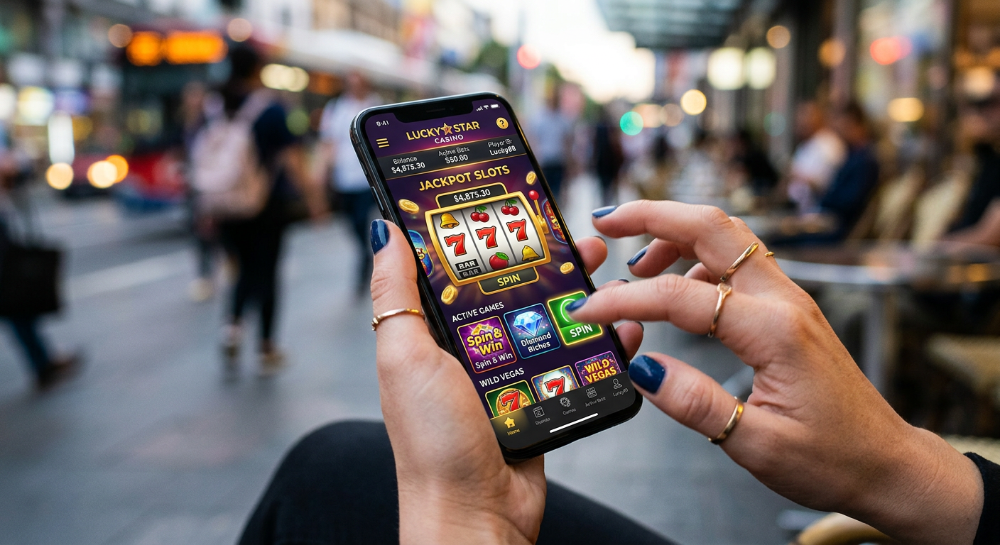
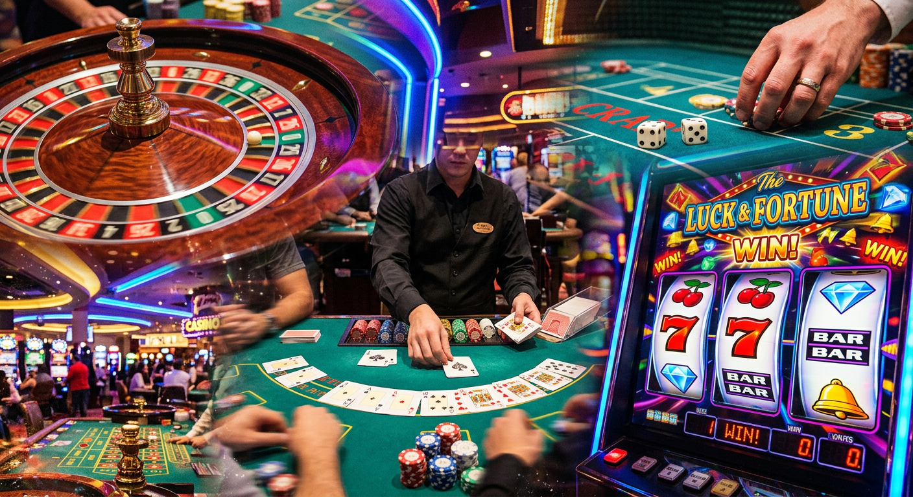

Nieuwe online casino echt geld: De beste legale opties in Nederland
Het landschap van de Nederlandse gokmarkt is in 2026 spectaculair veranderd. Sinds de opening van de markt enkele jaren geleden, zien we een constante stroom van innovatieve aanbieders die de concurrentie aangaan met de gevestigde namen. Voor spelers die op zoek zijn naar een nieuwe online casino echt geld ervaring, is er momenteel meer keuze dan ooit tevoren. Deze platforms onderscheiden zich door geavanceerde technologieën, snellere uitbetalingen en een spelaanbod dat nauw aansluit bij de wensen van de moderne gokker.
In dit uitgebreide artikel duiken we diep in de wereld van de nieuwste kansspelwebsites. We kijken niet alleen naar de bonussen, maar juist ook naar de technische stabiliteit en de betrouwbaarheid van de licentiehouders. Als u overweegt om met echt geld te gaan spelen bij een nieuwe aanbieder, is het essentieel om te weten welke partijen in 2026 de toon zetten op het gebied van veiligheid en entertainment.
De focus ligt dit jaar op personalisatie en snelheid. De meeste spelers willen niet meer wachten op trage verificatieprocessen of ouderwetse interfaces. Een nieuwe online casino moet in 2026 voldoen aan extreem hoge eisen van zowel de toezichthouder als de consument. In de volgende secties analyseren we de belangrijkste spelers en trends die u moet kennen voordat u een eerste storting doet.
De opkomst van nieuwe aanbieders op de Nederlandse markt
Sinds de legalisering van online kansspelen is de Nederlandse markt uitgegroeid tot een van de meest gereguleerde en veilige omgevingen in Europa. In 2026 zien we dat internationale grootmachten hun weg naar Nederland hebben gevonden, vaak met op maat gemaakte platforms voor de lokale speler. Het aanbod bij een nieuwe online casino echt geld site is hierdoor kwalitatief hoogwaardiger dan wat we enkele jaren geleden zagen.
De concurrentie tussen de verschillende merken zorgt ervoor dat de kwaliteit van de dienstverlening continu verbetert. Innovaties zoals directe bankkoppelingen en verbeterde mobiele apps zijn nu de standaard geworden. Voor de speler betekent dit een vloeiendere ervaring, waarbij de focus volledig op het spelplezier kan liggen zonder technische haperingen.
Bedrijven zoals New Future Games BV en Tulipa Ent Limited hebben strategische posities ingenomen door unieke concepten te lanceren die afwijken van de standaard casinoformule. Zij begrijpen dat de Nederlandse gokker waarde hecht aan transparantie en eerlijkheid. Dit heeft geleid tot een golf van platforms waar de regels duidelijk zijn en de winkansen eerlijk worden gecommuniceerd.
Waarom kiezen spelers voor een recent gelanceerd casino?
De keuze voor een recent gelanceerd platform is vaak gebaseerd op de wens voor iets nieuws. Oudere casino's kunnen soms vastroesten in hun eigen systemen, terwijl een nieuwe online casino echt geld vaak vanaf de basis is opgebouwd met de nieuwste technieken. Dit resulteert in snellere laadtijden op smartphones en een meer intuïtieve navigatie door de duizenden beschikbare spellen.
Daarnaast zijn de welkomstbonussen bij nieuwe aanbieders vaak competitiever. Om marktaandeel te veroveren, moeten deze partijen met aantrekkelijke voorstellen komen om spelers weg te lokken bij de grote namen zoals 888 Casino of BetMGM. Dit biedt kansen voor de bewuste speler die op zoek is naar extra waarde voor zijn eerste storting.
Top 5 nieuwe online casino's om met echt geld te spelen
In 2026 hebben verschillende nieuwe namen zich bewezen als betrouwbare partners voor gokliefhebbers. Hieronder lichten we vijf platforms uit die momenteel bovenaan de lijst staan wat betreft innovatie en spelerservaring. Elk van deze opties biedt een veilige omgeving om met echt geld deel te nemen aan diverse kansspelen.
| Casino Merk | Belangrijkste Kenmerk | Bonus Type | Link |
|---|---|---|---|
| Goldbet | Uitmuntend Live Casino aanbod | 100% Match Bonus | Speel bij Goldbet |
| Newlucky | Innovatief loyaliteitsprogramma | Free Spins pakket | Speel bij Newlucky |
| Dragobet | Snelle uitbetalingen binnen 5 minuten | Cashback Bonus | Speel bij Dragobet |
| Fortunicabet | Exclusieve Nederlandse tafelspellen | Welkomstpakket | Speel bij Fortunicabet |
| Spinorhino | Grootste aanbod jackpot slots | Stortingsbonus | Speel bij Spinorhino |
Bij het selecteren van een nieuwe online casino echt geld is het van groot belang dat u kijkt naar welk type speler u bent. Sommige platforms focussen zich volledig op sportweddenschappen, terwijl anderen uitblinken in video slots of live dealer games. De bovenstaande tabel geeft een overzicht van de diverse specialisaties die we in 2026 op de markt zien.
BetMGM: Een wereldwijde grootmacht in Nederland
Hoewel BetMGM technisch gezien geen kleine nieuwkomer is, heeft hun recente expansie op de Nederlandse markt in 2026 voor een flinke opschudding gezorgd. Met hun Amerikaanse roots brengen ze een niveau van entertainment en 'glamour' dat voorheen ontbrak. Hun platform is een perfect voorbeeld van hoe een nieuwe online casino echt geld ervaring zowel grootschalig als persoonlijk kan aanvoelen.
Hard Rock Casino: Rocking de Nederlandse markt
Een andere opvallende naam is het Hard Rock Casino. Bekend van hun fysieke locaties wereldwijd, hebben ze hun digitale deuren geopend voor Nederlandse spelers. Hun focus ligt op een unieke combinatie van muziekbeleving en gokken. Spelers kunnen hier echt geld inzetten op exclusieve spellen die nergens anders te vinden zijn, wat hun positie in 2026 versterkt.
Tonybet: Innovatie en sportwedden
Tonybet is in 2026 een van de meest gerespecteerde namen geworden voor spelers die van variatie houden. Ze combineren een robuust casino-aanbod met een van de meest uitgebreide sportweddenschappen-secties van het land. Bij dit nieuwe online casino echt geld inzetten betekent toegang krijgen tot diepgaande statistieken en live streaming van sportevenementen.
711 Casino en LeoVegas: Vernieuwde ervaringen
Ook platforms zoals 711 Casino en de gevestigde naam LeoVegas hebben hun systemen in 2026 volledig vernieuwd om mee te kunnen met de nieuwste trends. Hoewel zij al langer op de markt zijn, voelen hun vernieuwde interfaces aan als een nieuwe online casino echt geld website. Dit toont aan dat innovatie niet alleen voorbehouden is aan start-ups, maar een noodzaak is voor de hele industrie.
Hoe wij de betrouwbaarheid van een nieuwe online casino echt geld testen
Het beoordelen van een nieuwe online casino echt geld is een nauwkeurig proces dat verder gaat dan alleen het bekijken van de homepage. Ons team van experts hanteert een strikt protocol om de veiligheid van Nederlandse spelers te waarborgen. De eerste stap in dit proces is altijd de verificatie van de licentie. In Nederland is de enige geldige licentie die van de lokale autoriteiten.
We kijken ook naar de technische infrastructuur. Maakt de site gebruik van moderne encryptie? Zijn de algemene voorwaarden transparant en begrijpelijk geschreven? Een betrouwbare aanbieder heeft niets te verbergen en zal altijd duidelijk zijn over zaken als uitbetalingslimieten en bonusvoorwaarden. In 2026 is de lat voor operationele uitmuntendheid hoger dan ooit.
Daarnaast voeren we praktijktesten uit door zelf met echt geld te storten en spellen te spelen. We testen de reactiesnelheid van de klantenservice op verschillende tijdstippen van de dag en evalueren hoe snel winsten daadwerkelijk op onze bankrekening staan. Alleen aanbieders die op al deze punten een hoge score halen, worden door ons aanbevolen.
De rol van de Nederlandse Kansspelautoriteit (Ksa)
De Kansspelautoriteit, vaak afgekort als Ksa, speelt een cruciale rol in de bescherming van consumenten. Elke nieuwe online casino echt geld die legaal in Nederland wil opereren, moet een uitgebreid vergunningstraject doorlopen. Dit traject controleert niet alleen de financiële stabiliteit van het bedrijf, maar ook de integriteit van de software en de verslavingspreventiemaatregelen.
In 2026 zien we dat de Ksa nog strenger toeziet op de naleving van de regels, met name rondom reclame-uitingen en het beschermen van jongvolwassenen. Als een platform het logo van de Kansspelautoriteit draagt, weet u als speler dat u juridisch beschermd bent en dat de spellen eerlijk verlopen. De toezichthouder zorgt ervoor dat online gokken een veilige vorm van recreatie blijft.
Veiligheid van persoonlijke gegevens en transacties
Bij het spelen bij een nieuwe online casino echt geld deelt u gevoelige informatie, zoals uw burgerservicenummer (BSN) en bankgegevens. Het is daarom essentieel dat platforms gebruikmaken van de nieuwste SSL-encryptietechnologieën. In 2026 is cyberveiligheid een topprioriteit voor de gokindustrie. Platforms worden regelmatig onderworpen aan externe audits door gespecialiseerde IT-bedrijven.
Bovendien moeten legale casino's voldoen aan de AVG-wetgeving (Algemene Verordening Gegevensbescherming). Dit betekent dat u controle heeft over uw eigen data en dat het casino deze niet zomaar mag delen met derden voor marketingdoeleinden. Veiligheid is in de moderne gokwereld geen extraatje meer, maar een fundamenteel onderdeel van de dienstverlening.
Is het legaal? De status van online gokken in 2026

Veel spelers vragen zich nog steeds af hoe de legaliteit precies zit bij een nieuwe online casino echt geld. In 2026 is het antwoord simpel: alleen casino's met een vergunning van de Nederlandse Kansspelautoriteit mogen legaal hun diensten aanbieden aan ingezetenen van Nederland. Het spelen bij buitenlandse casino's zonder deze specifieke licentie is niet toegestaan en brengt risico's met zich mee.
De Nederlandse overheid heeft een systeem opgezet waarbij belasting wordt afgedragen door de aanbieders zelf, waardoor de speler over zijn winst meestal geen extra aangifte meer hoeft te doen bij de Belastingdienst. Dit maakt online gokken bij legale partijen financieel aantrekkelijk en administratief eenvoudig. Het is altijd raadzaam om de officiële 'whitelist' van de Ksa te raadplegen voor de meest actuele status van een aanbieder.
Bedrijven zoals JVH gaming en Hommerson, die al decennia lang ervaring hebben in de fysieke gokhallen, zijn ook online volledig legaal actief. Hun overstap naar de digitale wereld heeft de markt volwassener gemaakt en de standaarden voor legale exploitatie verder verhoogd. Het legale aanbod is in 2026 zo divers dat er geen enkele reden meer is om uit te wijken naar het illegale grijze circuit.
Nieuw Casino Zonder Registratie: Snelle toegang tot actie

Een van de grootste trends in 2026 is het concept van het casino zonder traditionele registratie. Hoewel een volledige KYC (Know Your Customer) procedure nog steeds wettelijk verplicht is, wordt dit proces bij een nieuwe online casino echt geld vaak op de achtergrond afgehandeld via uw bankidentificatie. Dit wordt vaak 'Pay N Play' genoemd, een technologie die het mogelijk maakt om direct te storten en te spelen.
In Nederland wordt dit proces meestal gefaciliteerd door iDEAL. Door in te loggen bij uw bank, verifieert u tegelijkertijd uw identiteit en leeftijd bij het casino. Dit bespaart de speler het handmatig uploaden van paspoorten en energierekeningen, wat voorheen vaak een bron van irritatie was. Het proces is niet alleen sneller, maar ook veel minder foutgevoelig.
Deze snelle toegang betekent echter niet dat de veiligheid in het gedrang komt. Integendeel, doordat de verificatie via de bank verloopt, is de kans op identiteitsfraude aanzienlijk kleiner. Een casino met deze technologie wordt in 2026 door veel spelers geprefereerd vanwege het enorme gemak. De combinatie van snelheid en veiligheid is wat de moderne gokker zoekt.
Populaire spellen bij moderne gokplatforms

In 2026 is het spelaanbod bij een gemiddeld nieuwe online casino echt geld indrukwekkend groot. Waar men vroeger genoegen moest nemen met enkele honderden titels, bieden de huidige platforms vaak duizenden verschillende spellen aan. De focus ligt hierbij op kwaliteit en innovatieve spelmechanieken. Ontwikkelaars zoals Pragmatic Play blijven de grenzen verleggen van wat mogelijk is op een scherm.
Video slots blijven de meest populaire categorie. In 2026 zien we dat 'gamification' een grote rol speelt; slots zijn niet meer alleen draaiende rollen, maar bevatten complexe verhaallijnen, missies en interactieve bonusrondes. Spelers kunnen met echt geld deelnemen aan toernooien waarbij ze tegen andere spelers strijden voor extra prijzen en prestige op de ranglijsten.
Ook de klassieke tafelspellen blijven onverminderd populair. Varianten van blackjack en roulette zijn beschikbaar in talloze uitvoeringen, van de traditionele regels tot moderne versies met extra multipliers. De diversiteit zorgt ervoor dat er voor elk budget en elke voorkeur een geschikt spel te vinden is bij de moderne aanbieder.
- Video Slots: Met progressieve jackpots die tot in de miljoenen kunnen lopen.
- Tafelspellen: Geautomatiseerde versies van blackjack en baccarat met lage limieten.
- Slingo: Een razend populaire hybride tussen slots en bingo, vaak aangeboden door merken als tombola.
- Crash Games: Snelle actie waarbij timing en zenuwen van staal essentieel zijn om echt geld winnen mogelijk te maken.
De nieuwste video slots en jackpot games
Bij een nieuwe online casino echt geld zult u merken dat de graphics van slots tegenwoordig bijna niet meer onderdoen voor die van console games. De introductie van 3D-animaties en atmosferische soundtracks zorgt voor een meeslepende ervaring. Bovendien zijn de uitbetalingspercentages (RTP) bij veel nieuwe titels zeer competitief gebleven ondanks de marktregulering.
Jackpot games hebben in 2026 een nieuwe vlucht genomen door de koppeling van netwerken over verschillende casino's heen. Dit betekent dat de potten sneller groeien en vaker vallen. Voor spelers die dromen van een levenveranderend bedrag, biedt een online casino vaak een overzichtelijke sectie met alle beschikbare jackpots en hun huidige standen.
Nieuw Live Casino: De ultieme interactieve ervaring
Het live casino segment is misschien wel het meest geëvolueerde onderdeel van de gokmarkt in 2026. Dankzij snelle 5G-netwerken en geavanceerde streamingtechnologie kunnen spelers nu in high-definition communiceren met echte dealers vanuit een studio of zelfs een echt fysiek casino. Dit brengt de sfeer van Las Vegas direct naar de huiskamer van de Nederlandse speler.
Innovaties in deze sector komen vooral van bedrijven als Evolution. Zij hebben game shows ontwikkeld die verder gaan dan alleen een rad van fortuin. Deze spellen combineren live entertainment met augmented reality elementen, waardoor een unieke spelervaring ontstaat. Bij een nieuwe online casino echt geld inzetten op live games is in 2026 een sociale aangelegenheid geworden, waarbij de chatfunctie intensief wordt gebruikt.
Bovendien zijn er steeds meer Nederlandstalige tafels beschikbaar. Spelers vinden het prettig om in hun eigen taal te kunnen communiceren met de dealer. Dit verhoogt niet alleen de gezelligheid, maar zorgt ook voor meer duidelijkheid over de spelregels en procedures. Het live aanbod is een essentieel onderdeel geworden van elk serieus platform.
Live casino innovaties van Evolution en Pragmatic Play
In 2026 domineren Evolution en Pragmatic Play de live lobby's van de beste casino's. Hun aanbod varieert van Lightning Roulette, waarbij blikseminslagen voor enorme multipliers zorgen, tot meeslepende game shows zoals 'Treasure Island'. De interactiviteit is ongekend; spelers hebben soms zelfs invloed op de verloop van de bonusrondes door keuzes te maken.
Deze providers investeren ook zwaar in de veiligheid van hun streams. Elke handeling van de dealer wordt door meerdere camera's vastgelegd en geanalyseerd door geavanceerde software om fouten of onregelmatigheden direct te detecteren. Hierdoor is echt geld bij een live tafel inzetten in 2026 veiliger dan ooit tevoren.
Betaalmethoden: Snel en veilig storten met iDEAL en meer
Geld storten en opnemen is bij een nieuwe online casino echt geld eenvoudiger dan ooit. De Nederlandse markt leunt zwaar op iDEAL, wat verreweg de meest gebruikte methode is. Het biedt directe transacties via de vertrouwde omgeving van de eigen bank. In 2026 zijn vrijwel alle legale casino's aangesloten bij de nieuwste versie van iDEAL, die nog sneller en mobielvriendelijker is.
Naast iDEAL zien we een opkomst van alternatieve betaalmethoden. E-wallets zoals PayPal zijn populair vanwege hun gebruiksgemak en extra beveiligingslaag. Ook Revolut heeft een stevig marktaandeel veroverd onder de jongere generatie gokkers, dankzij hun uitstekende apps en snelle verwerking van internationale transacties. Voor spelers is het belangrijk dat een casino is voorzien van diverse veilige opties.
Een cruciaal aspect in 2026 is de snelheid van uitbetalingen. Waar spelers vroeger dagen moesten wachten op hun winst, verwachten ze nu dat het geld binnen enkele minuten op hun rekening staat. Veel nieuwe casino's adverteren dan ook met 'instant payouts'. Dit wordt mogelijk gemaakt door directe koppelingen met de banken, waardoor handmatige goedkeuring door het casino vaak niet meer nodig is voor kleinere bedragen.
- iDEAL: De standaard voor Nederlandse spelers, direct en veilig.
- PayPal: Snel storten en opnemen met sterke kopersbescherming.
- Revolut: Ideaal voor mobiele gebruikers en snelle budgetcontrole.
- Creditcards: Visa en Mastercard blijven betrouwbare opties voor velen.
Bonussen en promoties voor nieuwe spelers in 2026
De strijd om de gunst van de speler uit zich het duidelijkst in de bonussen die een nieuwe online casino echt geld aanbiedt. In 2026 zijn de voorwaarden van deze bonussen gelukkig veel transparanter geworden door strengere regelgeving. Casino's moeten nu heel duidelijk vermelden wat de rondspeelvoorwaarden zijn en welke spellen zijn uitgesloten van de promotie.
Welkomstbonussen zijn er in vele soorten en maten. De meest voorkomende is de stortingsbonus, waarbij uw eerste inleg wordt verdubbeld door het casino. Dit geeft spelers meer speelruimte om het platform te verkennen. Ook free spins op populaire slots zijn een vast onderdeel van het welkomstpakket bij de meeste moderne aanbieders.
Wat we in 2026 vaker zien, zijn de zogenaamde 'no wagering' bonussen. Dit zijn bonussen waarbij de winst die u behaalt direct mag worden uitgekeerd, zonder dat u het bedrag tientallen keren hoeft in te zetten. Hoewel deze bonussen vaak kleiner zijn in absolute bedragen, bieden ze veel meer waarde voor de gemiddelde speler die niet urenlang wil rondspelen om zijn winst te verzilveren.
Free spins en welkomstbonussen begrijpen
Het is essentieel om de kleine lettertjes te lezen bij een nieuwe online casino echt geld bonus. Let vooral op de 'wagering requirements' (rondspeelvoorwaarden). Als een bonus 35x moet worden rondgespeeld, betekent dit dat u voor een bonus van 10 euro in totaal 350 euro moet inzetten voordat u kunt uitbetalen. In 2026 zijn casino's verplicht om een duidelijke teller in de spelersaccount te tonen die de voortgang hiervan bijhoudt.
Free spins worden vaak uitgegeven voor specifieke titels van grote providers. Dit is een uitstekende manier voor een online casino om nieuwe spellen te promoten en voor de speler om zonder risico een nieuwe slot uit te proberen. Houd echter altijd rekening met de maximale winst die uit dergelijke spins kan worden behaald, aangezien hier vaak een limiet op zit.
Wat is CRUKS? Spelersbescherming in Nederland
In het kader van verantwoord spelen is het Centraal Register Uitsluiting Kansspelen, beter bekend als CRUKS, een fundamenteel onderdeel van de Nederlandse markt in 2026. Elke legale nieuwe online casino echt geld is verplicht om bij elke inlogbeurt te controleren of een speler in dit register staat. Als een speler is opgenomen in CRUKS, wordt hem de toegang tot alle legale Nederlandse gokwebsites en fysieke casino's ontzegd.
Dit systeem is ontworpen om spelers te beschermen tegen de negatieve gevolgen van gokverslaving. Uitsluiting kan op vrijwillige basis gebeuren voor een periode van minimaal zes maanden. In extreme gevallen kan de Ksa of een naaste ook een verzoek tot onvrijwillige uitsluiting indienen, mits daar gegronde redenen voor zijn. De integratie van CRUKS is een bewijs van de volwassenheid van de Nederlandse markt.
Bovendien moeten casino's in 2026 proactief spelgedrag monitoren. Als een platform merkt dat een speler ongebruikelijk veel tijd of geld besteedt, zijn ze wettelijk verplicht om in te grijpen. Dit kan variëren van een waarschuwend gesprek tot het tijdelijk blokkeren van het account. Verantwoord gokken bij een een online casino is in 2026 de hoogste prioriteit voor zowel de overheid als de aanbieders.
Mobiel gokken bij een nieuwe online casino echt geld
In 2026 vindt meer dan 85% van alle gokactiviteiten plaats op mobiele apparaten. Een nieuwe online casino echt geld kan dan ook niet meer zonder een 'mobile-first' benadering. Dit betekent dat de website perfect schaalt naar elk schermformaat en dat alle functies, van storten tot het live casino, vlekkeloos werken op smartphones en tablets.
Veel aanbieders kiezen voor een web-app die direct in de browser werkt, maar we zien ook een terugkeer van speciale native apps voor iOS en Android. Deze apps bieden vaak extra functies zoals push-notificaties voor nieuwe bonussen en biometrische inlogopties zoals FaceID of vingerafdrukscanners. Dit verhoogt niet alleen het gemak, maar ook de veiligheid van uw account.
De snelheid van mobiel gokken is in 2026 ongekend. Spellen laden binnen enkele seconden en de interface is zo ontworpen dat u zelfs met één hand eenvoudig kunt navigeren. Of u nu onderweg bent in de trein of thuis op de bank zit, de ervaring bij een modern online casino is altijd consistent en van hoge kwaliteit. De technische barrières die mobiel gokken vroeger soms lastig maakten, zijn volledig verdwenen.
Innovaties van Pragmatic Play en Evolution
De rol van softwareleveranciers is in 2026 belangrijker dan ooit voor het succes van een nieuwe online casino echt geld. Pragmatic Play heeft zichzelf gepositioneerd als een alleskunner, met een portfolio dat varieert van klassieke fruitautomaten tot complexe live dealer spellen. Hun 'Drops & Wins' promoties zijn een vaste waarde geworden waarbij spelers dagelijks kans maken op extra geldprijzen tijdens het spelen van hun favoriete slots.
Aan de andere kant blijft Evolution de onbetwiste koning van de live casino innovatie. In 2026 hebben ze VR-elementen (Virtual Reality) geïntegreerd in hun spellen, waardoor spelers met een VR-bril echt door een virtuele casinovloer kunnen lopen. Hoewel dit nog in de kinderschoenen staat, laat het zien waar de industrie naartoe gaat. Bij een casino met Evolution software weet u zeker dat u de nieuwste technologische hoogstandjes ervaart.
Beide bedrijven investeren ook zwaar in 'responsible gaming' tools binnen hun software. Spelers kunnen binnen het spel zelf limieten instellen of een pauze inlassen. Deze integratie op spelniveau zorgt voor een extra laag bescherming, bovenop de maatregelen die het casino zelf al neemt. In 2026 is de samenwerking tussen casino en provider op dit vlak nauwer dan ooit.
De impact van Tulipa Ent Limited en New Future Games BV
Achter de schermen van veel succesvolle platforms in 2026 staan grote exploitanten zoals Tulipa Ent Limited en New Future Games BV. Deze bedrijven beheren vaak meerdere merken en maken gebruik van een gecentraliseerde infrastructuur. Dit zorgt voor stabiliteit en een hoge mate van betrouwbaarheid voor de eindgebruiker die bij een nieuwe online casino echt geld wil inzetten.
Dankzij de schaalgrootte van deze exploitanten kunnen ze betere deals sluiten met game providers, wat resulteert in exclusieve spellen die alleen op hun platforms te vinden zijn. Bovendien hebben ze de middelen om te investeren in de beste klantenservice en de snelste betaalsystemen. Voor de speler is het vaak een geruststellende gedachte dat er een ervaren moederbedrijf achter een nieuw merk staat.
Deze bedrijven zijn ook pioniers op het gebied van data-analyse om gokverslaving in een vroeg stadium op te sporen. Door gebruik te maken van AI kunnen ze patronen herkennen die duiden op problematisch gedrag, nog voordat de speler dit zelf doorheeft. Dit maatschappelijk verantwoorde ondernemen is in 2026 een kernwaarde geworden voor grote spelers in de industrie.
Klantenservice en ondersteuning bij moderne sites
Een aspect dat vaak wordt onderschat, maar cruciaal is voor de ervaring bij een nieuwe online casino echt geld, is de klantenservice. In 2026 is een 24/7 bereikbaarheid via live chat de absolute standaard. Nederlandse spelers verwachten bovendien ondersteuning in hun eigen taal. De wachttijden zijn tot een minimum beperkt, vaak wordt u binnen 60 seconden geholpen door een deskundige medewerker.
Naast de chat bieden veel casino's uitgebreide kennisbanken en FAQ-secties aan waar spelers zelf de antwoorden op de meest voorkomende vragen kunnen vinden. Sommige innovatieve platforms maken in 2026 ook gebruik van AI-gestuurde bots die eenvoudige vragen over bijvoorbeeld bonusvoorwaarden direct kunnen beantwoorden, waardoor menselijke agenten meer tijd hebben voor complexe zaken.
De kwaliteit van de ondersteuning is een goede graadmeter voor de betrouwbaarheid van een casino. Een aanbieder die investeert in een professioneel team laat zien dat ze hun spelers serieus nemen. In onze reviews van elk nieuwe online casino besteden we dan ook uitgebreid aandacht aan de effectiviteit en vriendelijkheid van de helpdesk.
De toekomst van de Nederlandse gokmarkt
Kijkend naar de rest van 2026 en daarna, verwachten we dat de markt voor een nieuwe online casino echt geld verder zal consolideren. De kleinere partijen die niet kunnen voldoen aan de strenge eisen van de Ksa zullen verdwijnen, terwijl de sterke merken verder groeien. We verwachten ook meer integratie tussen fysieke en online ervaringen, waarbij loyaliteitspunten in beide werelden kunnen worden gebruikt.
Technologische ontwikkelingen zoals blockchain kunnen in de toekomst een rol gaan spelen bij het nog transparanter maken van speluitkomsten en transacties. Hoewel de regulering in Nederland momenteel erg gericht is op traditionele bankmethoden, houden we de ontwikkelingen rondom digitale valuta en gedecentraliseerde systemen nauwlettend in de gaten. De sector blijft in beweging en stilstand is in deze competitieve markt geen optie.
Uiteindelijk is het de speler die profiteert van deze ontwikkelingen. De kwaliteit van het aanbod is nog nooit zo hoog geweest, en de veiligheid is door de bemoeienis van de Ksa gewaarborgd. Voor wie verantwoord wil genieten van een spelletje, biedt de markt in 2026 een fantastische en veilige omgeving om met echt geld een gokje te wagen.
Veelgestelde vragen over gokken bij nieuwe casino's
In dit gedeelte beantwoorden we enkele van de meest prangende vragen die spelers hebben wanneer ze overwegen om over te stappen naar een nieuwe online casino echt geld platform in 2026. Het is belangrijk om goed geïnformeerd te zijn voordat u een account aanmaakt.
Is het veilig om geld te storten bij een nieuw casino?
Ja, mits het casino een vergunning heeft van de Nederlandse Kansspelautoriteit. Deze licentie garandeert dat uw geld veilig is en dat de spellen eerlijk verlopen. Controleer altijd het logo van de Ksa onderaan de website.
Hoe lang duurt het voordat mijn winst wordt uitbetaald?
In 2026 verwerken de meeste nieuwe casino's uitbetalingen bijna onmiddellijk. Dankzij technieken zoals Pay N Play en directe bankkoppelingen via iDEAL staat uw winst vaak al binnen enkele minuten tot uren op uw rekening.
Kan ik limieten instellen voor mijn speelgedrag?
Absoluut. Elke legale aanbieder in Nederland is verplicht om u tools aan te bieden waarmee u stortings-, verlies- en tijdslimieten kunt instellen. Dit is een essentieel onderdeel van het verantwoord spelen beleid.
Wat gebeurt er als ik een geschil heb met een casino?
Als u er met de klantenservice van het casino niet uitkomt, kunt u contact opnemen met de Kansspelautoriteit of een onafhankelijke klachtencommissie. Omdat u bij een legaal casino speelt, heeft u wettelijke bescherming.
Zijn er ook casino's die winsten direct uitkeren zonder voorwaarden?
Sommige nieuwe online casino echt geld sites bieden bonussen aan zonder rondspeelvoorwaarden (no wagering). In dat geval zijn de winsten die u met de bonus behaalt direct van u. Lees echter altijd goed de specifieke actievoorwaarden.

Digitale marketeer en contentspecialist met ruim 7 jaar ervaring.